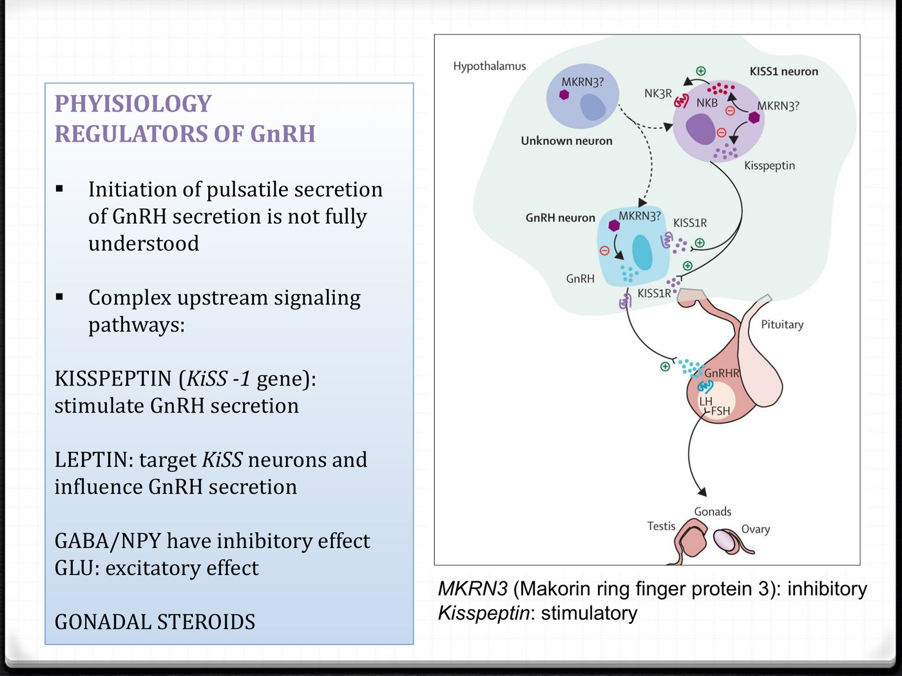
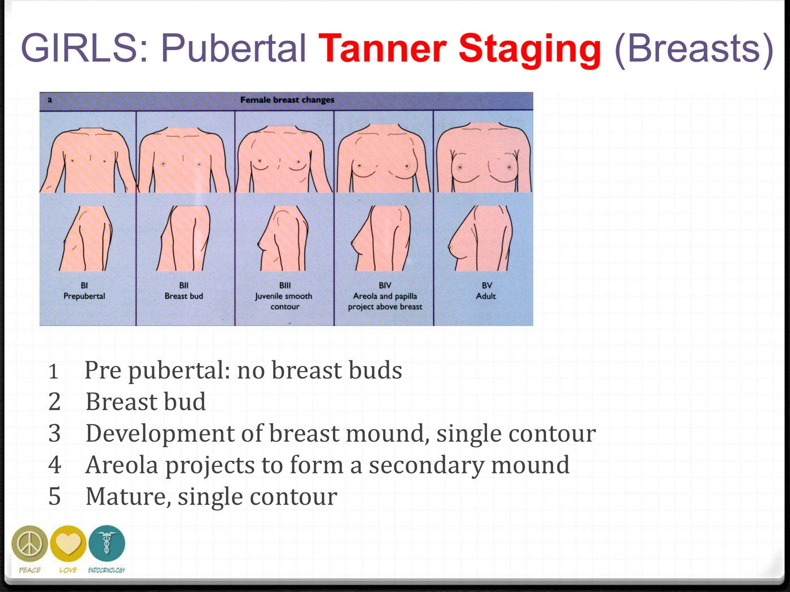
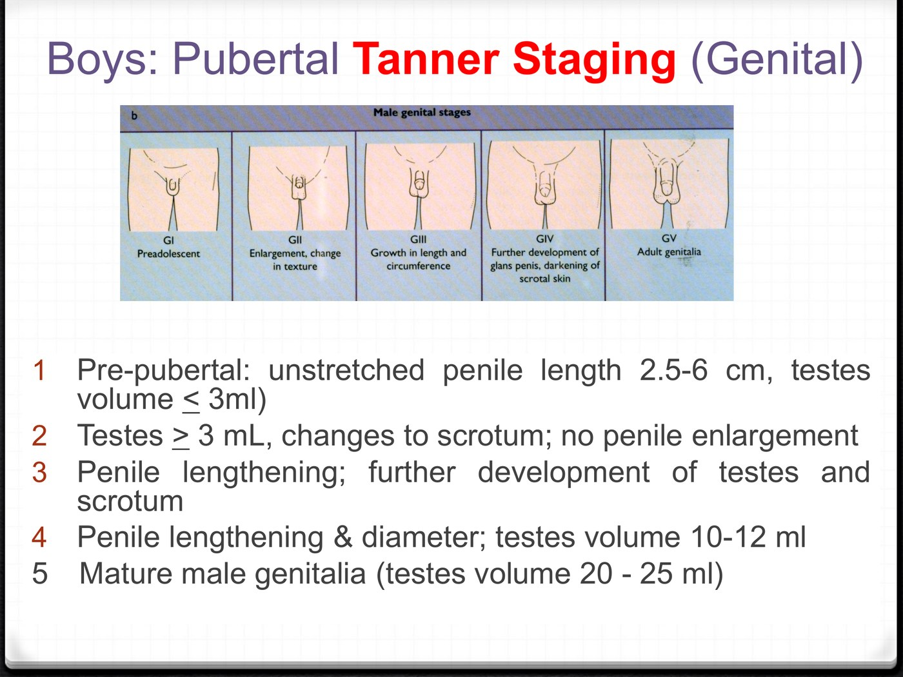
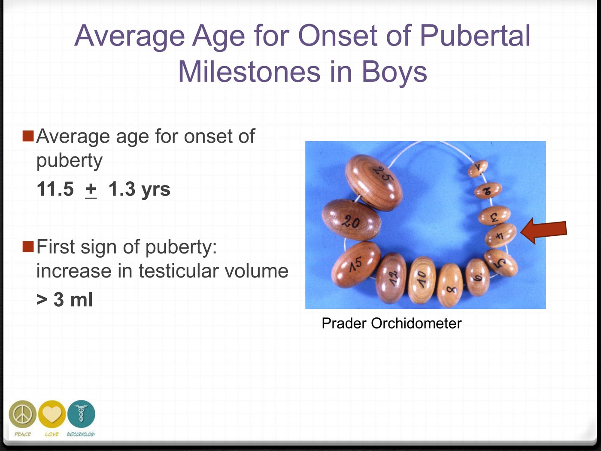
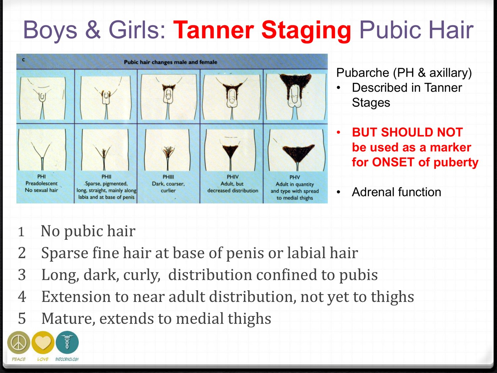
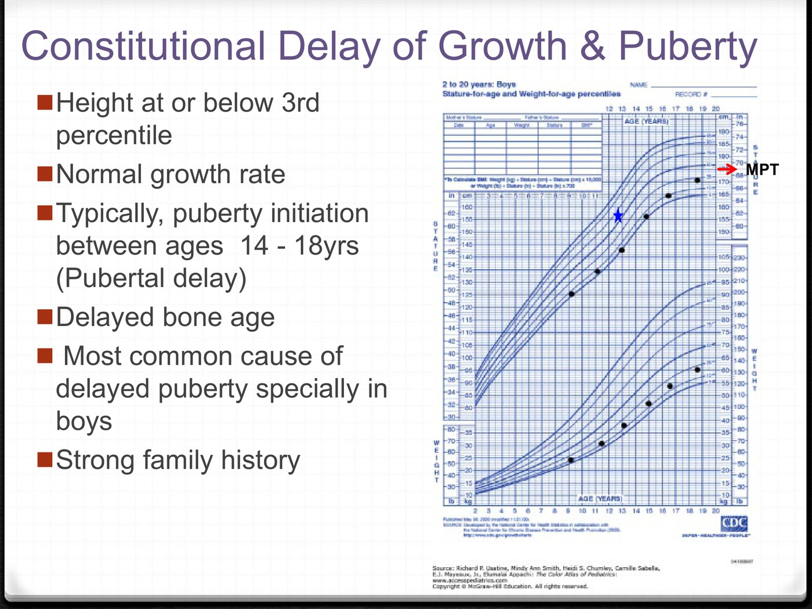
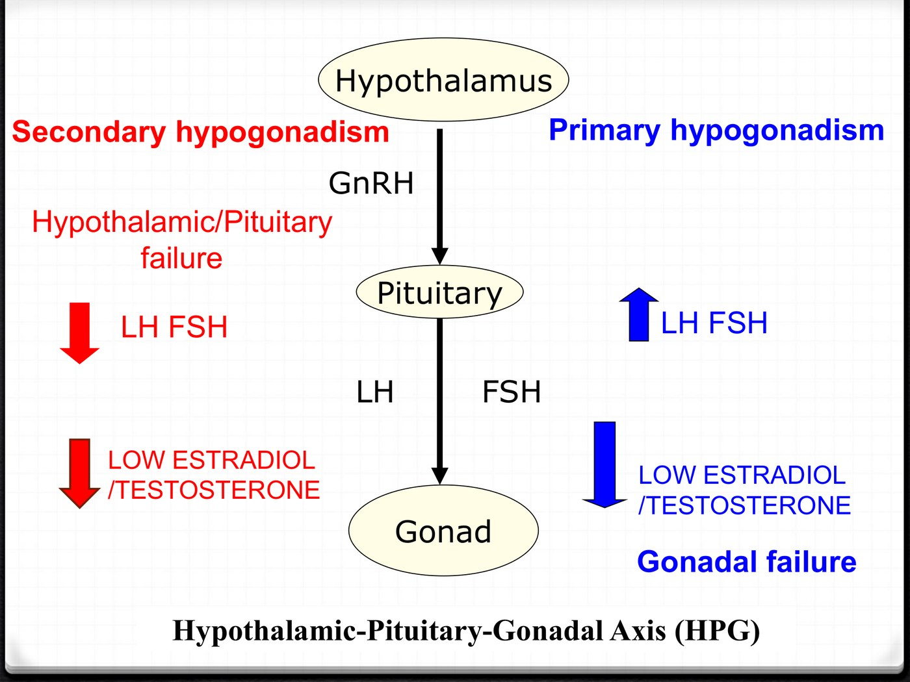
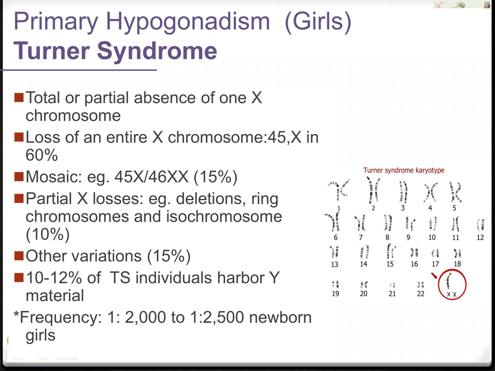
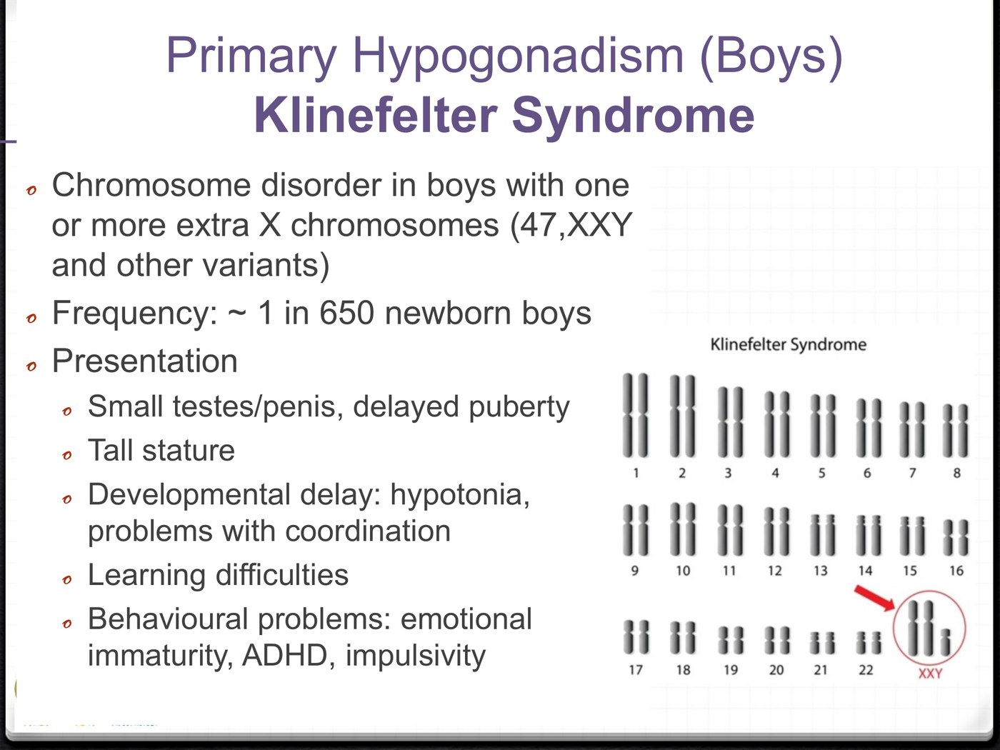

Abnormalities of Puberty
- Normal onset: girls 8–13, boys 9–14. The first sign in girls is thelarche (breast bud). The first sign in boys is testicular volume > 3 mL. Pubic hair is driven by the adrenal, so it can never be used to date the onset of puberty.
- Delayed puberty means no signs by 13 in girls or 14 in boys. The commonest cause, especially in boys, is constitutional delay, a normal variant: short but growing at a normal rate, with a delayed bone age and a parent who was a late bloomer.
- If it isn't constitutional, LH/FSH makes the split. High means the gonad has failed (primary): Turner in girls, Klinefelter in boys. Low means the brain isn't asking (secondary): a CNS lesion, Kallmann, or a functional cause such as an eating disorder, heavy exercise, chronic illness or hyperprolactinemia.
- Precocious puberty means signs before 8 in girls or 9 in boys. First exclude the benign variants, isolated premature thelarche and isolated premature pubarche. Then ask the key question: central (GnRH-dependent, LH high) or peripheral (GnRH-independent, LH low with sex steroids high)?
- Central precocious puberty in girls is mostly idiopathic. In boys, less than half is, so every boy gets a careful CNS assessment. In boys, testicular size tells you the source: enlarged testes mean LH is driving them; virilization with small testes means the testosterone is coming from elsewhere. Central precocious puberty is treated with a GnRH analogue.
Learning Objectives
- Describe the normal stages of, and the normal ages for, pubertal development in boys and girls.
- Define precocious puberty and delayed puberty in boys and girls, and outline their main causes.
- Classify disorders of precocious puberty and of delayed puberty.
- Interpret clinical findings and laboratory results for disorders of puberty.
- Summarize basic concepts of treatment for disorders of puberty.
The physiology behind all of this is in 3.3, Physiology of Puberty. That page covers how the axis is switched on (the GABA brake and the kisspeptin accelerator) and why it switches on when it does. This lecture is about what happens when the timing goes wrong.
Normal Puberty, Briefly
Puberty is the time at which a child develops secondary sexual characteristics and reproductive function. It involves four things at once:
- Secondary sexual characteristics: breast and testicular development, pubic hair.
- A growth spurt.
- A change in body composition: more bone mass, muscle mass, fat mass and strength.
- Psychosocial and psychosexual maturation.
It depends on pulsatile GnRH, which drives pulsatile LH and FSH. LH acts on theca cells in the ovary and Leydig cells in the testis to make androgens. FSH acts on the ovarian follicle and the seminiferous tubules to make estradiol, inhibin and gametes. Sex steroids then feed back negatively on GnRH and the gonadotrophins.

The slide lists MKRN3 as simply "inhibitory". There is more to it, and it ties the normal physiology to one of the diseases below. In prepubertal mice, Mkrn3 expression is high. It falls just before puberty and stays low afterwards, which is exactly what a brake that has to be released would do.
In humans, loss-of-function mutations in MKRN3 cause familial central precocious puberty: the brake is missing, so the axis switches on early. The gene is imprinted, and only the copy from the father is expressed. In the original families, every affected child had inherited the mutation from their father. It sits in the Prader–Willi region of chromosome 15. Abreu et al., NEJM 2013. Added from outside the deck.
| Estrogen does | Androgen does |
|---|---|
| Breast development (thelarche) | Acne; oily skin and hair; increased body odour |
| Increase in growth rate | Pubic and axillary hair (pubarche) |
| Vaginal discharge | Enlargement of the penis/clitoris; deepening of the voice |
| Menses (menarche) | Increase in growth rate |
| Mood swings | Mood swings |
This table is the key to working out the source of the hormone in a disorder. Breast development and menses need estrogen. Hair, acne, odour and clitoromegaly need androgen. A girl with pubic hair and no breasts has an androgen source and no estrogen source, and that points somewhere very different from a girl with breasts and no hair.
The Normal Sequence: Girls vs Boys
| Girls | Boys | |
|---|---|---|
| First sign | Thelarche (breast bud) | Testicular enlargement, volume > 3 mL |
| Sequence | 1. Thelarche 2. Growth spurt (between Tanner 2 and 3) 3. Pubarche: pubic and axillary hair 4. Menarche | 1. Testicular enlargement 2. Penile growth 3. Pubarche: pubic and axillary hair, body odour 4. Growth spurt (testes 10–12 mL, between Tanner 3 and 4) 5. Deepening of voice 6. Increased muscle bulk 7. Facial hair |
| Average ages | Breasts (Tanner 2): 10.3 ± 1.0 Pubic hair: 11.2 ± 1.1 Menarche: 12.7 ± 1.0 | Onset of puberty: 11.5 ± 1.3 |
| Normal range for onset | 8–13 years | 9–14 years |
| Growth spurt | Early, at Tanner 2–3 | Late, at Tanner 3–4 |
- Menarche comes about 2.5 years after thelarche. It is a late event in female puberty, not an early one.
- About 15% of girls have pubarche as their first sign, before thelarche. That is still normal.
- Boys start later, so they end up taller. Girls start earlier, so they end up shorter. Peak height velocity is similar in both sexes. The difference is how much growing a boy has done before his spurt starts.
Tanner Staging
Tanner stages 1–5 grade breast, genital and pubic hair development separately. Stage 1 is prepubertal and stage 5 is adult. Stage 2 of breast or genital development marks the onset of puberty.

Breasts. 1: prepubertal, no bud · 2: breast bud, the onset of puberty · 3: breast mound, single contour · 4: areola forms a secondary mound · 5: mature, single contour.
Genitals. 1: testes ≤ 3 mL · 2: testes > 3 mL with scrotal change, the onset of puberty · 3: penile lengthening · 4: testes 10–12 mL · 5: adult, testes 20–25 mL.
The Prader orchidometer. A string of graded beads compared against the testis by feel. A volume above 3 mL is the first sign of puberty in boys, so this is how you date the onset.
Pubic hair, both sexes. Staged the same way, but it should not be used to mark the onset of puberty. It reflects adrenal androgen, not the gonadal axis.Pubic and axillary hair are made by androgen, and in children most of that androgen comes from the adrenal (adrenarche), not the gonad. The adrenal and gonadal axes run on separate switches. So a child can grow pubic hair with the HPG axis still completely off, and a child can have a failed gonad and still grow pubic hair.
That is not a technicality. It is why a girl with Turner syndrome still goes through pubarche, in 100% of cases, while her breasts never develop. It is also why isolated early pubic hair is usually a benign adrenal variant rather than true precocious puberty. Both come up below.
Delayed Puberty
The axis stays switched off longer than it should. First decide whether this is a normal late bloomer. If it isn't, the gonadotrophins tell you which end of the axis has failed.
Definition, and the Normal Variant
Delayed puberty is the absence or incomplete development of puberty at an age 2.5 standard deviations above the population mean. In practice:
- Girls: no pubertal signs by age 13.
- Boys: no pubertal signs by age 14.
There are three causes: a normal variant (constitutional delay), primary hypogonadism, or secondary hypogonadism.
Constitutional delay of growth and puberty (CDGP)

The typical CDGP curve. The child tracks at or below the 3rd percentile but parallel to the lines, so the growth rate is normal. Later he catches up toward the mid-parental target (MPT). He is short because he is late, not because anything is wrong.- Height at or below the 3rd percentile.
- Normal growth rate.
- Puberty typically starts between 14 and 18.
- Delayed bone age.
- The most common cause of delayed puberty, especially in boys.
- Strong family history: a parent who was also late.
Bone age measures how far the skeleton has matured, and it tracks puberty rather than the calendar. In CDGP the whole child is simply running on a later clock. His height is appropriate for his bone age, and the growth plates are still wide open, so the growth he appears to be missing is still available. That is why these children reach a normal adult height in the end.
The hard part is that constitutional delay and secondary hypogonadism look alike early on: both are prepubertal with low gonadotrophins. The things that point to CDGP are the family history, a normal growth rate, and the absence of any CNS or systemic clue. Sometimes only time separates them.
The Split: Primary vs Secondary Hypogonadism

Primary hypogonadism in girls: Turner syndrome
High LH/FSH. The main genetic cause is Turner syndrome. Other causes of primary ovarian failure are autoimmune, radiation, drugs and chemotherapy (e.g. cyclophosphamide), and surgery or trauma.

Total or partial absence of one X. Only 60% are 45,X, with a whole X missing. 15% are mosaic (45,X/46,XX), 10% are partial losses, and 15% are other variants. About 1 in 2,000–2,500 newborn girls.| Feature | Frequency |
|---|---|
| Short stature | 95–100%, with a mean final height of 144 cm |
| Complete gonadal failure (streak ovaries) | 90% |
| Thelarche | Only 10–15% |
| Menarche | 1% (usually mosaics) |
| Infertility | > 99% |
| Pubarche | 100%, because it is adrenal |
| Hypothyroidism | 10% |
Dysmorphic features: neck webbing, short 4th and 5th metacarpals, increased carrying angle, nail dysplasia. Also: congenital heart disease, and renal anomalies such as a horseshoe kidney.
The most common physical feature is short stature, found in 95–100%. It is more common than webbed neck, a wide carrying angle, widely spaced nipples or short metacarpals. So a short girl with delayed puberty should have a karyotype, even with no dysmorphic features at all.
What else to screen for: congenital heart disease, renal abnormalities, autoimmune disease (thyroid, celiac disease, type 1 diabetes), hearing problems, and a high risk of metabolic syndrome.
Also note that 10–12% of girls with Turner carry Y-chromosome material. That matters because Y material in a dysgenetic gonad carries a risk of gonadoblastoma. It is flagged here as a reason the karyotype needs to be looked at in detail, not just as "45,X".
Primary hypogonadism in boys: Klinefelter syndrome
High LH/FSH. The main genetic cause is Klinefelter syndrome. Acquired causes are gonadal disease or infection, radiation, chemotherapy, surgery and trauma. Anorchia is a congenital cause.

One or more extra X chromosomes. 80% are 47,XXY and 20% are 46,XY/47,XXY mosaics. About 1 in 650 newborn boys, which makes it far more common than Turner. More X chromosomes bring more intellectual impairment.- Presents with small testes and penis, delayed puberty, and tall stature.
- Developmental: hypotonia, poor coordination, learning difficulties, emotional immaturity, ADHD, impulsivity.
- Seminiferous tubular dysgenesis, so spermatogenesis is absent.
- Variable Leydig cell function, so testosterone production is variable.
- The most common cause of testicular failure.
Turner and Klinefelter are mirror images, and it helps to learn them together. Turner girls are short with failed ovaries. Klinefelter boys are tall with failed tubules. Both have high gonadotrophins, and a karyotype diagnoses both.
Secondary Hypogonadism: "Think About Brain Problems"
Low LH/FSH with low sex steroids. The lecture's own heading is the rule to remember: think about brain problems.
| Category | Examples |
|---|---|
| Structural CNS | Trauma, infection, radiation, tumour |
| Gonadotrophin deficiency | Isolated LH/FSH deficiency, or combined with other pituitary deficiencies; congenital pituitary defects |
| Kallmann syndrome | Congenital isolated gonadotrophin deficiency with anosmia |
| Genetic syndromes | Laurence–Moon–Biedl, Prader–Willi, others |
| Functional | Chronic systemic disease; eating disorder or excessive exercise (hypothalamic amenorrhea) |
| Hyperprolactinemia | Prolactin suppresses GnRH. See 3.2 |
GnRH neurons are not born in the hypothalamus. In the embryo they arise in the olfactory placode and migrate along the developing olfactory nerves into the brain. In Kallmann syndrome that shared migration fails. The olfactory bulbs don't form properly, so there is no sense of smell, and the GnRH neurons never arrive where they are needed, so there is no puberty.
That makes "can you smell?" a genuinely useful question in a teenager with delayed puberty and low gonadotrophins. The shared migration is added from outside the deck. The deck states the link to anosmia.
The functional causes are the axis doing its job. 3.3 covers how GnRH activation depends on energy stores, which is where the critical metabolic mass and leptin ideas come from. An underweight, over-exercising or chronically ill child is being held back for a reason, and restoring energy balance restores the axis.
Precocious Puberty
The axis switches on too early, or the sex steroids arrive without it. The whole of this part is one question: is the GnRH axis driving this, or not?
Definition, and the Two Benign Variants
- Girls: onset of puberty before age 8.
- Boys: onset of puberty before age 9.
Before calling it pathological, rule out the two variants of normal development. Each involves only one isolated sign, and neither progresses.
| Isolated premature thelarche | Isolated premature pubarche | |
|---|---|---|
| What | Isolated breast development, with very low-grade estrogenization of the vaginal mucosa | Isolated pubic hair, ± mild acne, axillary hair and body odour |
| When | 6 months to 2 years | 6 to 8 years, more often in girls |
| Why | Transient estrogen exposure. Minipuberty has not fully switched off (see 3.3) | A physiological rise in adrenal androgens, i.e. early adrenarche |
| What is absent | No growth spurt and no advance in bone age, and no signs of the other hormone. This absence is what makes them variants. | |
| Outcome | Often regresses spontaneously; rarely progresses to precocious puberty | Slow progression, normal final height. Associated with insulin resistance and later PCOS in girls |
The test that separates a variant from true precocious puberty is the growth pattern. Real puberty means real sex steroid exposure, which drives a growth spurt and advances the bone age. A breast bud or a few pubic hairs in a child growing along her usual centile is a variant until proven otherwise.
Central or Peripheral? The Key Question
Pathological precocious puberty comes in two kinds, and the gonadotrophins separate them:
| Central (CPP) | Peripheral (PPP) | |
|---|---|---|
| Also called | GnRH-dependent | GnRH-independent |
| Mechanism | The normal axis switches on early. Everything is appropriate except the timing | Sex steroids come from a source that bypasses the axis: a gonad or adrenal acting on its own, or a drug |
| LH/FSH | High | Low, suppressed by the steroids |
| Sex steroids | High | High |
![Slide on the diagnosis of GnRH-dependent central precocious puberty with a graph of LH and FSH across childhood: a surge at birth that remains high in the first months, suppression to low values by about 6 months of age until puberty, then a restart of pulsatile release. Text notes that LH is more useful than FSH for assessing onset, that a random LH above 0.3 is consistent with central puberty, that an undetectable LH alone has low sensitivity because of pulsatile secretion, and that in the gold-standard GnRH stimulation test the LH response is exaggerated with a peak above 5.](../../../../assets/images/week-3/puberty-abnormalities/cpp-diagnosis-lh.jpg) Why LH is the test, and why a single value can mislead. After the surge at birth, the axis is suppressed from about 6 months until puberty, when pulsatile release restarts. LH tracks the restart better than FSH. But because LH comes in pulses, one low random value can miss it. That is what the stimulation test is for.
Why LH is the test, and why a single value can mislead. After the surge at birth, the axis is suppressed from about 6 months until puberty, when pulsatile release restarts. LH tracks the restart better than FSH. But because LH comes in pulses, one low random value can miss it. That is what the stimulation test is for.
LH makes Leydig cells produce testosterone, and Leydig cells live in the testes. So when the central axis is driving puberty, both testes grow: bilateral enlargement, ≥ 4 mL.
When testosterone comes from somewhere else, such as the adrenal in CAH, an adrenal tumour or exogenous testosterone, you get virilization (acne, pubic hair, a longer penis, faster growth, advanced bone age) but the testes stay small, < 3 mL, because nothing is stimulating them.
One more pattern: a unilaterally enlarged testis in a virilized boy suggests a Leydig cell tumour. The source is in the testis, but it is autonomous and one-sided.
The Causes
Central (GnRH-dependent)
| Girls | Boys | |
|---|---|---|
| Idiopathic | Most cases. The commonest cause of precocious puberty in girls | Rare: less than 50% |
| Implication | Every boy with central precocious puberty needs a careful CNS assessment. An idiopathic label in a boy has to be earned. | |
- Without a CNS abnormality: idiopathic (sporadic or familial; see MKRN3 above), or, rarely, chronic sex-steroid exposure that eventually switches the axis on.
- With a CNS abnormality that increases GnRH secretion: hypothalamic or pineal tumour, hydrocephalus, trauma, radiation, and congenital malformations such as a hypothalamic hamartoma or arachnoid cyst.
- Idiopathic CPP is not harmless if untreated. Adult height is on average 5–6 cm lower, because early estrogen closes the growth plates early. Puberty also finishes prematurely, with early menses and real psychosocial consequences.
Peripheral (GnRH-independent)
| Source | Causes |
|---|---|
| Gonadal | Ovarian: cysts, granulosa cell tumours · McCune–Albright syndrome (genetic) · Testicular: Leydig cell tumours (asymmetric testes) · testotoxicosis (familial male precocious puberty, genetic) |
| Adrenal | Congenital adrenal hyperplasia: autosomal recessive, with too much sex steroid, too little cortisol, ± mineralocorticoid deficiency with salt wasting · virilizing tumours · feminizing tumours · Cushing syndrome |
| Iatrogenic | Exposure to exogenous sex hormones |
CAH connects back to the adrenal lecture. A block in cortisol synthesis means low cortisol, so ACTH rises and keeps driving the gland, and the excess precursors are pushed down the androgen pathway. The same enzyme defect causes adrenal insufficiency and precocious virilization.
McCune–Albright syndrome
![Slide on McCune-Albright syndrome with a radiograph of polyostotic fibrous dysplasia and a photograph of a child's back and trunk showing large irregular café-au-lait macules with jagged coast-of-Maine borders, alongside the classical triad of peripheral precocious puberty with multiple follicular cysts, polyostotic fibrous dysplasia and irregular café-au-lait pigmentation, and the mechanism of a somatic activating mutation in the gene for the alpha subunit of the G protein causing constitutive cAMP activation.](../../../../assets/images/week-3/puberty-abnormalities/mccune-albright.jpg) The classical triad: peripheral precocious puberty (multiple follicular cysts), polyostotic fibrous dysplasia (the X-ray), and irregular café-au-lait patches with jagged "coast of Maine" borders (the photograph). From the lecture.
The classical triad: peripheral precocious puberty (multiple follicular cysts), polyostotic fibrous dysplasia (the X-ray), and irregular café-au-lait patches with jagged "coast of Maine" borders (the photograph). From the lecture.
- A somatic activating mutation in the gene for the α-subunit of the stimulatory G protein (Gsα). The gene is GNAS; the slide's "CNAS1" is a typo for the older name GNAS1.
- The abnormal G protein keeps cAMP switched on permanently in whatever tissues carry the mutation.
- It is peripheral (GnRH-independent). The ovary behaves as if LH were present even though LH is suppressed.
- Other endocrine glands can be affected: pituitary adenoma, Cushing, thyroid.
Many hormone receptors (for LH, FSH, TSH, ACTH, GHRH and MSH) signal by activating Gsα, which raises cAMP inside the cell. If Gsα is stuck in the "on" position, every one of those receptors acts as if its hormone were present. The ovary makes estrogen without LH, the skin makes pigment without MSH, the thyroid can overproduce without TSH, and the adrenal can overproduce without ACTH.
Because the mutation is somatic, it arose after conception, so only some cells carry it. The result is a patchy, mosaic pattern: irregular pigment and fibrous dysplasia in some bones but not others. A germline version of the same activating mutation is thought to be lethal, which would explain why the syndrome is only seen as a mosaic. Mechanistic context added from outside the deck.
Assessment and Treatment
| History | Physical | Investigations |
|---|---|---|
| Timing and progression of pubertal milestones Growth pattern: any growth spurt? CNS symptoms Medications, radiation Family history: parental heights, parents' age at puberty |
Measure and plot height and weight Tanner stages CNS signs Dysmorphic features, skin marks (café-au-lait) |
Random serum LH (> 0.3 IU/L suggests CPP) Serum estradiol/testosterone Bone age (hand X-ray) TSH ± Karyotype (Turner, Klinefelter in delayed puberty) ± Pelvic ultrasound (uterine size, endometrium, ovarian volume, follicles) ± LHRH stimulation test (gold standard for precocious puberty) ± MRI head if CNS pathology suspected |
Two items on this list do more than they seem to. TSH is there because severe primary hypothyroidism can present with early or late puberty, and it is easy to fix. The pelvic ultrasound reads the estrogen and gonadotrophin effect directly off the organs: an enlarged uterus and thickened endometrium mean estrogen has been present for some time, and large multifollicular ovaries mean gonadotrophin or Gs drive.
Treating central precocious puberty: GnRH (LHRH) analogues
It looks backwards: you treat early activation of the GnRH axis by giving a GnRH agonist. It works because the pituitary only responds to GnRH that pulses. A long-acting analogue gives a continuous signal, and continuous stimulation down-regulates the pituitary's GnRH receptors. The pituitary becomes resistant to the child's own GnRH. Removing the pulsatile pattern stops puberty.
The same physiology is on the HPG axis page: pulsatile GnRH stimulates, continuous GnRH suppresses.
- Delivery: a long-acting depot intramuscular injection every 12 weeks. Side effects appear minimal. The cost is about ,200/month, covered by OHIP.
- Goals: (1) stop pubertal progression, including menses; (2) stop the acceleration of bone maturation and delay epiphyseal closure, to protect final height; (3) improve psychosocial well-being.
Not every child needs it. Before starting, the lecture asks you to consider:
- How early is the onset? Is it in keeping with the family pattern?
- How fast is it progressing?
- What is the predicted adult height? Is it below the 3rd percentile, or below the parental target?
- What are the psychosocial implications for the child, the parents and their peers?
A girl who starts at 7½, is progressing slowly, has a mother who started early and a predicted height that is fine may reasonably be watched. A 5-year-old progressing quickly is a different conversation.
The physiology lecture (3.3) quotes a slide calling puberty abnormal "< 7 (precocious) or > 16 (delayed)". This lecture uses the standard definitions: precocious means before 8 in girls or 9 in boys, and delayed means no signs by 13 in girls or 14 in boys. Some guidelines use lower evaluation thresholds in certain populations, and a figure of 15–16 usually refers to absent menarche, which is a different question from absent signs. For questions from this lecture, use 8/9 and 13/14.
Built from Dr. Gallego's "Abnormalities of Puberty" slide deck. The Tanner staging, orchidometer, growth chart, hypogonadism axis, karyotypes, LH-over-childhood figure and McCune–Albright images are all taken from the deck. The central-versus-peripheral flowchart is drawn for these notes, because the deck makes that decision across several text slides. Added from outside the deck and flagged where they appear: the MKRN3 imprinting and paternal-inheritance finding (Abreu et al., NEJM 2013;368:2467–75, verified against the PubMed abstract); the correction of the random LH cut-off to 0.3 IU/L, and of "CNAS1" to GNAS; the shared olfactory-placode origin of GnRH neurons explaining anosmia in Kallmann syndrome; the Gsα/cAMP mechanism behind McCune–Albright's multiple features; and the reason continuous GnRH analogue suppresses the axis. The normal physiology of pubertal onset is covered in 3.3; CAH in 3.1; hyperprolactinemia in 3.2.